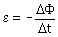

Ley de Faraday
El cambio en el flujo magnético que sufre una espira crea una f.e.m que hace circular corriente por esta. Esta f.e.m depende del cambio del flujo con el tiempo
f.e.m instántanea

Esta fórmula se usa cuando se conoce la expresión del flujo en función del tiempo
f.e.m media

Esta fórmula se aplica cuando se conoce el tiempo que ha tar-dado en producirse el cambio de flujo
En cualquiera de los casos el signo menos indica que la corriente que provoca la f.e.m tiende a compensar el cambio de flujo que la crea. No vale la pena preocuparse por esto, es más fácil de-terminar el sentido de la corriente con la ley de Lenz